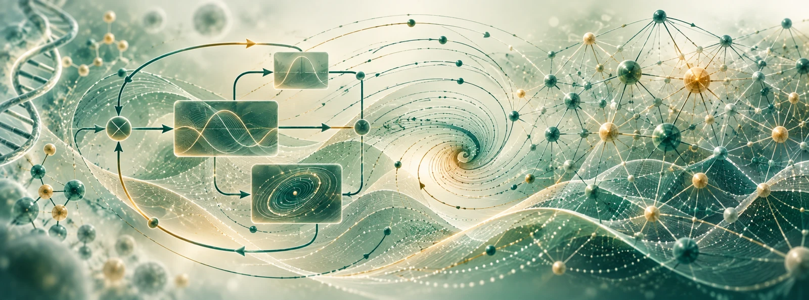
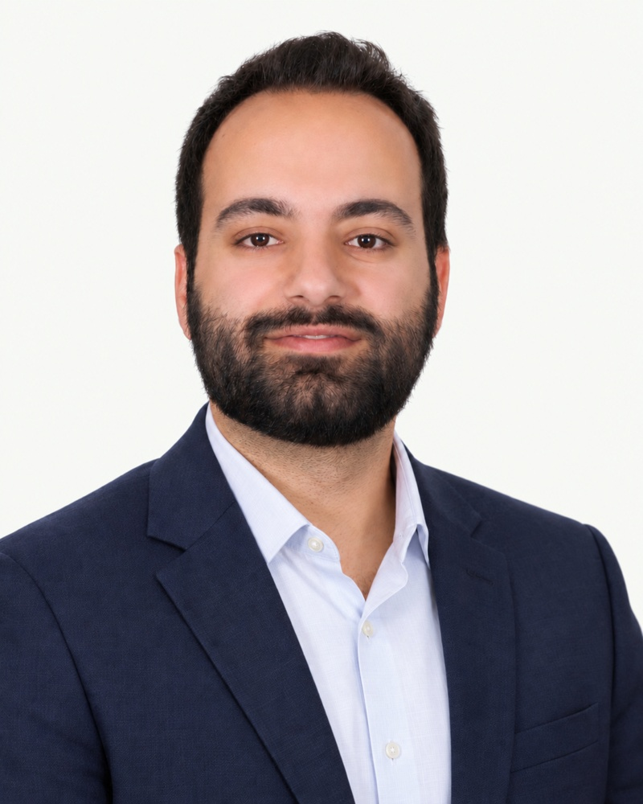

2026

Engineering Sensor-Based Antithetic Integral Controllers for Enhanced Dynamic Performance and Noise Attenuation
Cell Systems, 2026, Link to Poster

Assistant Professor · University of Cambridge
Research at the intersection of control theory, dynamical systems, synthetic biology, and artificial intelligence.
Department of Engineering · Information Engineering Division
Control Group · Fellow of Gonville and Caius College

Areas of inquiry
Selected work
Cell Systems, 2026, Link to Poster

Science Advances, 2026

International Journal of Robust and Nonlinear Control, 2025
Updates & milestones
Joined Gonville and Caius College, University of Cambridge, as a Fellow on 5 October 2026.
From Genetic Feedback Control to AI-Designed Biomolecular Networks — Keynote at the Information Engineering Division Conference 2026, University of Cambridge.
Joined the University of Cambridge as Assistant Professor in the Department of Engineering, Information Engineering Division, Control Group, on 1 September 2026.
Teaching Introduction to Dynamical Systems at ETH Zurich with Prof. Khammash
Gave a talk at CDC, Rio de Janeiro
Invited talk at University of Cambridge on Engineering Genetic Controllers to Accelerate Adaptation and Attenuate Cellular Noise
Another round of teaching Control Systems at Ashesi University in Ghana as part of the ETH for Development Masters Program
Promoted to Senior Research Scientist in BioSystems Science and Engineering, ETH Zurich
Taught Control Systems at Ashesi University in Ghana as part of the ETH for Development Masters Program
Our group received the SNSF Advanced Grant, which I contributed to, titled: "Theory and Design of Advanced Genetically Engineered Control Systems"
Filed a patent titled "Intein-based controllers"
Organized an invited session at the 61st IEEE Conference on Decision and Control in Mexico titled "Biological Controllers"
Our PID patent ranked among the Top 20 Inventions Spark Award
Filed a patent titled "Expression system and method for controlling a network in a cell and cell comprising the expression system"
Received the Best PhD Thesis Award, Center for Control, Dynamical-Systems & Computations (CCDC)
Started Postdoc in BioSystems Science and Engineering, ETH Zurich
Completed PhD in Mechanical Engineering, University of California, Santa Barbara
Completed MS in Mechanical Engineering, University of California, Santa Barbara
Received the Best Teacher Assistant Award at the Department of Mechanical Engineering, UCSB
Received the CCDC Outstanding Scholar Fellowship
Completed MS in Electrical and Computer Engineering, American University of Beirut